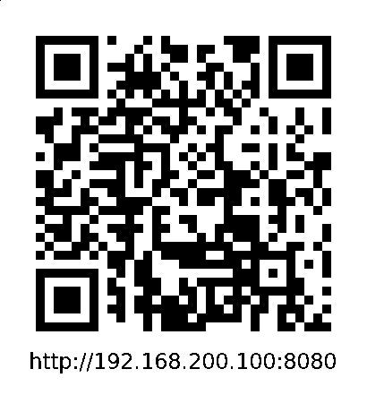

Bates Digital Music Symposium 2018
socketMusic: wireless (2015)
for percussion, electronics, and cell mobile devices
by Derek Kwan
http(s)://derekxkwan.com
https://derekxkwan.github.io/smwireless-slides/
Outline
- general info (form/compositional details/aesthetics)
- breakdown tech stack
- use of chance procedures as improv aid
- technical considerations
- further explorations
Instrumentation
- (improvised) percussion: snare drum, hi hat
- electronics: processed samples, processed percussion, synthesized sound
- mobile devices: sounds triggered by web server
Form
- three large sections with contrasting textures + improv. styles
- drone / modem
- in part inspired by Contact opening scene (zoomout)
- textural improv on SD/HH with dreadlock brushes
- radio / static
- based around 60 bpm pulse
- hihat rolls synced with radio/static
Form cont.
- (three large sections cont.)
- telegraph
- sea of morse code pulses imitated on HH/metal on SD
- ends with brown noise swell
- Note: all durations and subevents determined at runtime in Pure Data
Background
- working at Stony Brook's Teaching Learning Lab (media lab) - wanted to apply computer programming to doctoral recital
- inspired by Steven Schick 2014 premiere of Lei Liang's Trans (2014) at Miller Theater (Columbia)
- distributed stones to audience, signaled when to strike from stage
- https://www.youtube.com/watch?v=5qg2Khbi1ww
- wanted an inexpensive way to do multichannel audio
Aesthetics
- wireless - in content and medium
- breaking cultural (concert hall) norms
- performer/composer/audience relationship/balance of power
- improvisation, chance procedures on server/patch/mobile devices
- audience participation (active vs passive)
- stage/hall invisible wall
- performer/stage as focus of attention - audio/visuals on cell phone
- not silencing cell phones
Aesthetics cont.
- spatialization
- massively multichannel
- immersivity (sound sources from audience)
- chance-based location (depends on audience)
Sounds
- majority of sounds reference wireless technology (samples, synthesis)
- wireless telegraph (radio waves) - Guglielmo Marconi (patented 1896)
- first public radio broadcast - Lee De Forest/Metropolitan Opera (12/3/1910)
- Enrico Caruso as Canio - I Pagliacci (Leoncavallo)
- Riccardo Martin as Turridu - Cavalieria Rusticana (Mascagni)
Sounds cont.
- 1200 baud modem (not quite wireless, but evokes the WiFi-enabled nature of the piece)
- other misc sounds (radio static, fake talk radio)
Software Tech Stack
- Pure Data
- sound for on-stage speakers, scheduling, cues
- Node.js (Macchiato/Clojurescript)
- host web page
- OSC communication with Pure Data
- WebSocket communication with individual clients (socket.io)
- triggered events from Pd via OSC
Software Tech Stack cont.
- HTML/CSS/JS(CLJS)
- client-facing view
- React/Reagent/JS - reactive visuals/info display
- Web Audio API/Tone.js - synths, samples
- Websocket communication with server via socket.io
Hardware Tech Stack
- laptop
- audio interface (+ mics)
- wireless router
Jobs
- audio for on-stage speakers
- live input recording (attack-triggered) / processing (delays, FFT bin thresholding)
- samples + synthesis
- user interface (controls, clocks, cues)
- sec. 2 - cues for roll entrances 8th note before start and finish
Jobs cont.
- scheduling and triggering
- determine structure of piece (3 major sections)
- communication with node.js server (OSC)
- retrieve client list (base64)
- direct server to trigger events (WebSockets)
Chance Operations
- overall section durations
- randomly chosen within ranges to add up to at least seven minutes
- timings of events/subsections
- approx. times with given ranges
- perc. part cued as well! (sec. 2)
- specific contents of events
- random selection of clients
- random selection of sound files
- random triggering of sound events
- randomization of delay lines (section 2)
Jobs
- serve web page for clients
- keep track of indiv. connections via WebSockets (socket.io)
- trigger events on all devices (broadcast)
- trigger events on a specific device (emit)
- communicate with Pure Data (OSC)
- provide list of connections (base64)
- forward triggers from Pd to clients
Client (HTML/CSS/JS via CLJS)
Jobs
- client-facing interface loaded on devices
- CSS, JS for dynamic background, React (Reagent) for dynamic text
- sound synthesis/playback (Web Audio API / Tone.js)
- triggered by Node webserver (with visual feedback)
Chance Operations
- all sequences generated client-side
- chopped samples (sec. 1), filtered noise (sec. 1), telegraph beeps (sec. 3)
- freq / dur / Q / sample location / amp. / etc.
- start times of sequences
- flags sent from OSC to start immediately or delayed
- other sound parameters
- base freq. for modem synths (clicks/whine)
- speed of modem clicks
- freq of sine osc. for telegraph
Technical Notes
- why browser and not native?
- easily (comparatively) cross-platform
- no need to download additional software
- server/client
- cons
- data payload size
- limited to browser capabilities/non-native
Technical Considerations
- accessing hosted web site?
- static IP (easy, /etc/network/interfaces on *nix)
- router and DNS server?
- OpenWrt (DNS)
- Dynamic DNS (host on computer with bind?)
- qr-code direct to static ip
- port number
- custom port number
- port 80 (Web): setcap 'cap_net_bind_service+3p' /usr/bin/nodejs
qr-code for static-ip addr. w/ page served on 8080

gen. w/ Racket Simple-Qr library (Chen Xiao)
Technical Considerations cont.
- Apple/iOS - need user interaction to start audio context
- latencies from WiFi (rhythmic/timing accuracy)
- auto-screen lock without interaction
- NoSleep.js - https://github.com/richtr/NoSleep.js
Further Exploration
- not only for concert hall (installations)
- streaming live sound - maybe Icecast/WebRTC/recording-loading sounds?
- more sophisticated visualiations
- P5.js, Canvas, Three.js, Quil, AR.js...
- greater user interactivity
- many options for input (text, accelerometers, sensors, GUI)
- user control of sound, user supply of sound
- interactions: user-server, user-user
Biblography
-
"[Met Performance] CID:49210." MetOpera Database: The Metropolitan Opera Archives, Metropolitan Opera Association, archives.metoperafamily.org/archives/scripts/cgiip.exe/WService=BibSpeed/fullcit.w?xCID=49210&limit=2500&xBranch=ALL&xsdate=&xedate=&theterm=1910-11&x=0&xhomepath=&xhome=. Archive of December 3, 1910 Matinee Program Information
Bibliography cont.
-
Kane, Joseph Nathan. Famous First Facts. The H.W. Wilson Company, 1964.
- Fantel, Hans. "Sound; Out of De Forest And Onto The Air Came Music." The New York Times, 14 Jan. 1990, p. 002030, www.nytimes.com/1990/01/14/arts/sound-out-of-de-forest-and-onto-the-air-came-music.html.
Bibliography cont.
-
Sims, Michael. "Cavalleria Rusticana and I Pagliacci Crimes of Passion." Cavalleria Rusticana and I Pagliacci, www.concertoperaboston.org/cavalleria.html.
- Guglielmo Marconi - Biographical. NobelPrize.org. Nobel Media AB 2018. Sun. 14 Oct 2018.